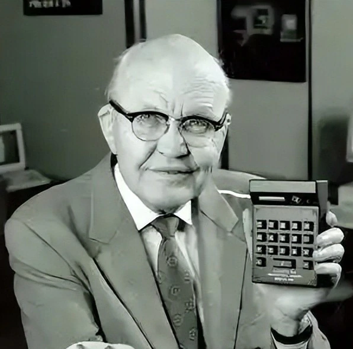
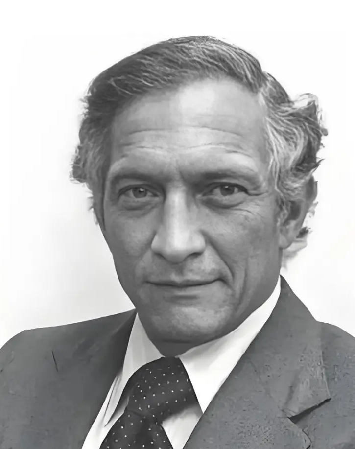
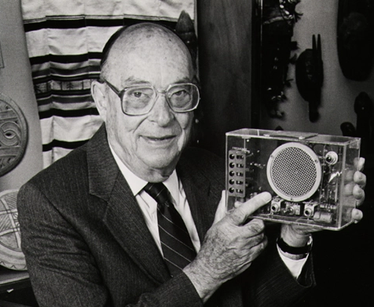
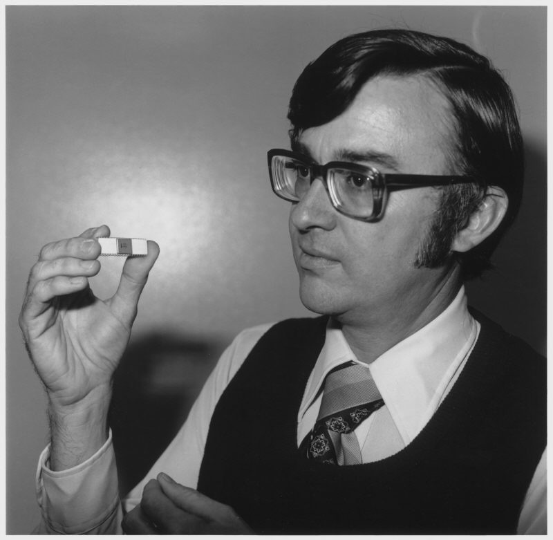

从真空管到晶体管，从集成电路到先进芯片，点击人物垂听先驱讲解。
最早的半导体器件，通过电流控制导通，彻底取代真空管，奠定现代电子技术基础。

将多个晶体管、电阻、电容集成在同一块半导体基片，实现电子元件一体化。

解决集成电路互连与工业化生产难题，奠定现代芯片产业基础。

电压控制型器件，功耗极低、集成度极高，成为现代集成电路最核心器件。

将计算机CPU集成在单芯片上，开创个人计算机时代，是集成电路技术的巅峰应用。
3nm及以下制程量产，SiC/GaN半导体广泛应用，器件性能、功耗、集成度达到全新高度。